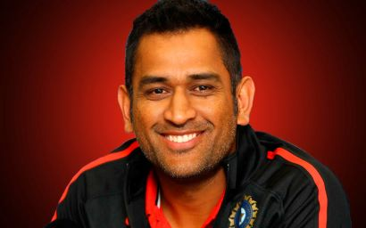
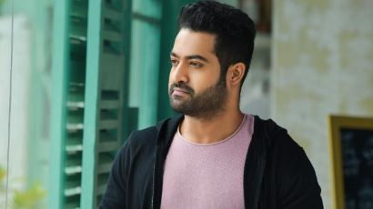

Mahendra Singh Dhoni

- The only Captain in cricketing history to win ICC World Cup, Champions Trophy, and ICC T20 World Cup.
- Dhoni has led CSK to five IPL titles, the joint-most in IPL history.
- MSD holds the record of captaining the most number of Test matches for India- 60 games

Nandamuri Taraka Rama Rao Jr
- Youngest Actor to Win Nandi Award: He won the Nandi Special Jury Award for his performance in "Aadi" (2002) at a young age.
- "RRR" is one of the highest-grossing Indian films of all time. Jr. NTR's performance received widespread praise.
- Jr. NTR is known for his exceptional dancing abilities, often considered one of the best dancers in the Telugu film industry.

Sunil Chhetri
- Chhetri is the joint-second highest active international goalscorer, only behind Cristiano Ronaldo, and tied with Lionel Messi.
- Chhetri holds the record for the most international caps for India, having played over 120 matches.
- Sunil Chhetri is the all-time leading goalscorer for the Indian national team, with over 80 international goals.